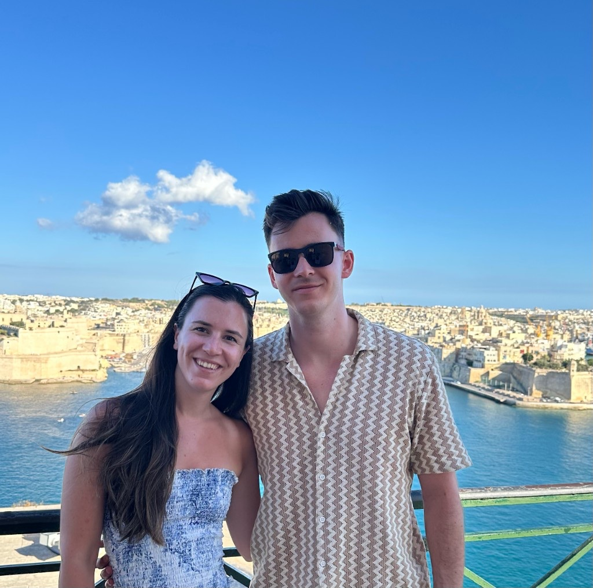
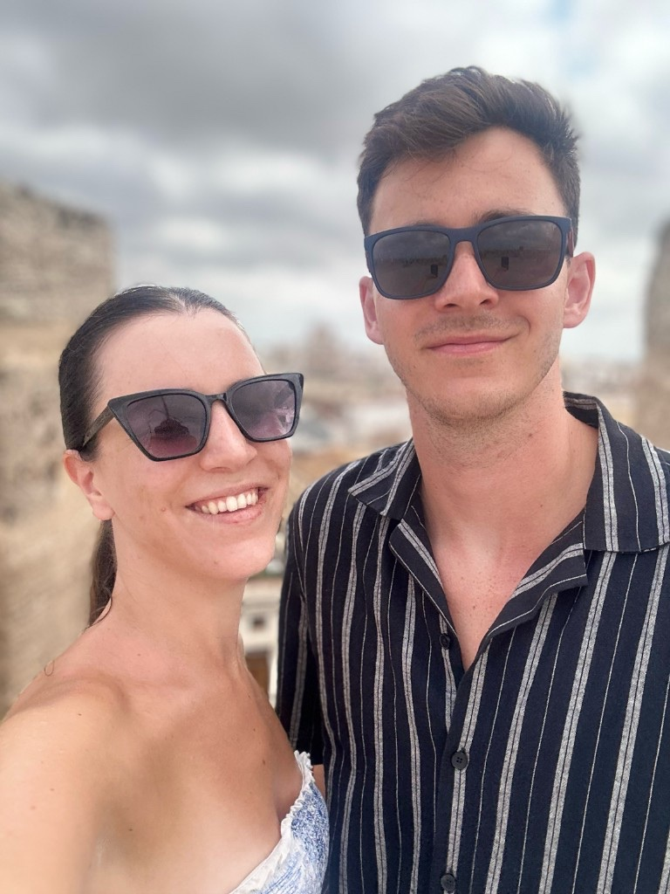

Nászmise
Nagyboldogasszony székesegyház
7400 Kaposvár, Kossuth tér 3.


Kedves Vendégeink!
Nagy örömmel hívunk Benneteket, hogy velünk ünnepeljétek életünk egyik legszebb hétvégéjét.
Csatlakozzatok hozzánk a pénteki közös hangolódásra és a szombati nagy napunkra is, hogy együtt élhessük át ezeket a különleges pillanatokat.
Szeretettel várunk Benneteket egy felejthetetlen ünneplésre!
Kedves Vendégeink!
Nagy örömmel hívunk Benneteket, hogy velünk ünnepeljétek életünk egyik legszebb napját.
Csatlakozzatok hozzánk a nagy napunkra, hogy együtt élhessük át ezeket a különleges pillanatokat.
Szeretettel várunk Benneteket egy felejthetetlen ünneplésre!
A programváltoztatás jogát fenntartjuk.
Nászmise
7400 Kaposvár, Kossuth tér 3.
Lagzi
7443 Alsóbogát, Szabadság utca 4.

A VILLABOGArT birtokon található szálláshelyek, mint a VILLABOGArT Vendégház és a Maison BOGArT, mindössze néhány perces sétára helyezkednek el a Magtártól. A Falusi Házak, Tóházak és Majorsági szállások esetében a távolság átlagosan 8–10 perc séta, míg autóval mindössze 3–4 perc.
Három útvonalat javasolunk:
Elegáns, színes öltözékre gondolunk — kérjük, kerüljétek a sötét színeket.
Háztartásunk teljes, nem is vágyunk másra, csak közös életünk kezdetén egy kis támogatásra.
Közös pillanatok.




Állítsd be a Google űrlap beágyazási linkjeit az index.html fájlban (data-form-fri-sat és data-form-sat-only).